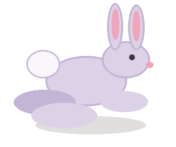

SO GEHT'S
Ziehe über ein gesuchtes Wort
Du kannst waagerecht, senkrecht oder diagonal suchen – auch rückwärts.
Finde zehn Begriffe aus dem Skript. Markiere ein Wort vom ersten bis zum letzten Buchstaben. Nach jedem Treffer hüpft das Kaninchen weiter und eine Lernkarte erscheint.

Du kannst waagerecht, senkrecht oder diagonal suchen – auch rückwärts.